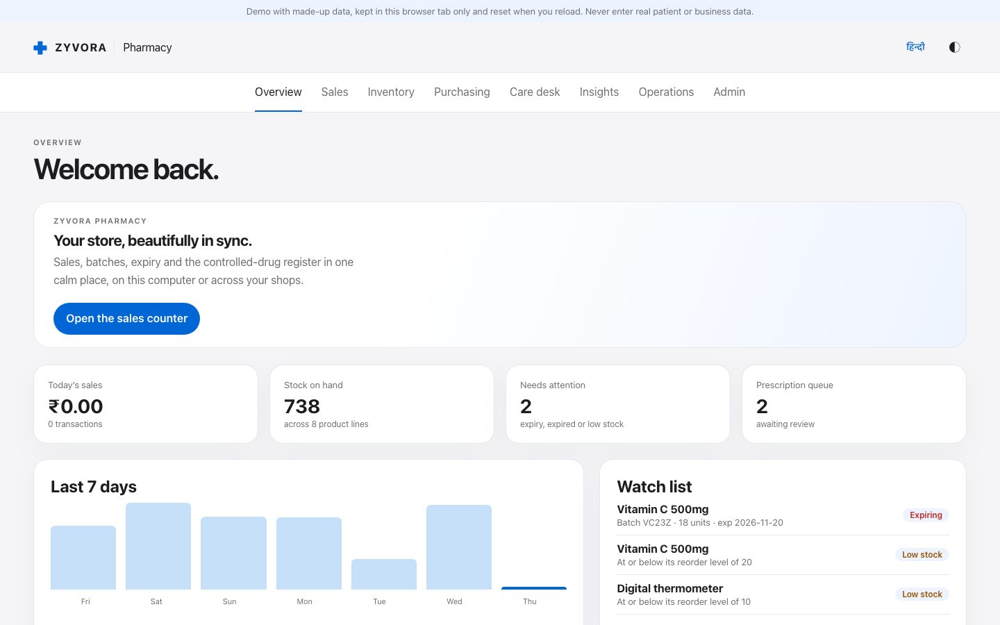
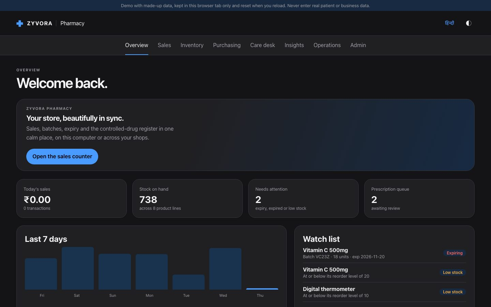

Zyvor AI Labs · Pharmacy
The pharmacy counter, done right.
Sell with GST, track every batch and expiry, keep the controlled-drug register and close the month, from one calm workspace on your desktop or on the web.
- Keyboard-first
- Desktop and web
- Light and dark
- English and Hindi
- Pilot release 0.1.0
- Synthetic data only
- Not a certified tax system


Screenshot of the running application with a fictional catalogue.
See it
Real screens. Real ledger underneath.
Captured from the running application. The products, customers and stock shown are fictional.
Modules
What a pharmacy day needs.
Each card is built and covered by tests. The limits are on this page too, in Honest limits.
The counter
Barcode or name search, GST-correct bills, batch and expiry picked for you (earliest expiry first), schedule H/H1/X rules with the prescriber recorded, discounts, payments split across cash, UPI and card, customers on account, loyalty points, and printable invoices.
Stock and expiry
Batches with expiry and cost, near-expiry and slow-moving lists, free units on a delivery ("10 + 1") costed correctly, substitutes by salt and strength, and reorder suggestions from how fast things really sell.
Purchasing
Purchase orders, receiving against an order, supplier bills with GST, payments, a supplier statement and ageing, a price history by supplier, returns to suppliers with the credit note and its GST, and an invoice reader that fills a delivery from a photo or PDF.
Controlled drugs
A hash-chained register for Schedule H1 and X: every dispense and every return, with the balance left, and a check that nothing has been altered.
GST and accounts
GSTR-1 and GSTR-3B figures with input tax credit from supplier bills, e-way bill JSON for the NIC portal, a sales register, and a Tally voucher export with the input tax ledgers.
Care desk
Prescriptions by doctor, refill reminders from each customer's own buying pattern, and a hospital hand-off.
Many stores
One company, several stores, transfers between them and a store switcher; each store keeps its own stock, bills and register.
Desktop and web
A desktop app that keeps its data in a file on the computer, and the same screens on a web server with sign-in, roles and an audit log. Encrypted backups, with automatic backups on the desktop.
Try it
Two ways, no sign-up.
Open the demo in this browser right now, or install a private copy on your own computer with one command. Both use made-up data. Start the guided trial.
curl -fsSL https://github.com/zyvorai/zyvor-pharma-site/releases/latest/download/get.sh | sh -s -- up --demoWindows PowerShell uses get.ps1: see Try it.
Honest limits
What Zyvora Pharmacy is not, yet.
Taken from the product's own documentation. A long feature list does not prove a commercial launch.
| Area | Where it stands |
|---|---|
| Maturity | A pilot release with a working core, tested at several layers. Start with a controlled pilot alongside your existing process. |
| Tax and statutory | GST figures, GSTR-1/3B offline-tool JSON and e-way bill JSON are worked out for you to check. Zyvora files nothing, is not certified GST software, does not do e-invoicing (IRN), and does not reconcile with GSTR-2B. Whether a credit may be claimed is for you and your accountant. |
| Hardware and payments | Payments are recorded, not initiated. No payment gateway, fiscal printer or scale drivers. |
| Medicine data | No built-in medicine database or interaction checks. Salt and strength lookups use what is in your own catalogue. |
| Controlled drugs | The register is a faithful record, not a licence. Inspectors' formats and local rules still apply. |
| Windows | The one-command trial on Windows runs inside WSL 2 and has not yet been verified on a real Windows PC. |
| Desktop installers | Signed, auto-updating desktop installers are not published yet; the trial uses the container install and the browser demo. |
| Security | No independent security review yet. The trial listens on this computer only. |
| Scale | The server uses one PostgreSQL database; no application-level high availability. |
Questions
Straight answers.
Can I run my pharmacy on it today?
Treat it as a pilot. The counter, stock, purchasing, register and GST workings are built and tested, but filing, payment gateways and hardware drivers are not there. Run it alongside your current process first.
Does it do GST?
It works out bills, returns and credit in the way the law sets them out and exports files for the GST offline tool, the e-way bill portal and Tally. It does not file anything and is not certified GST software.
Does it need the internet?
No. The desktop app and the trial copy run on your own machine. The browser demo runs entirely in your browser.
Where does my data live?
On your computer (a SQLite file) for the desktop app, or in your own PostgreSQL for the server. The trial copy keeps made-up data in a container volume that uninstall deletes.
Is there AI in it?
There is an optional invoice reader that fills a delivery from a photo or PDF, running in the app. Suggestions (reorder, refills) are arithmetic from your own history, and the screen shows the working.
Can I see the source?
The source repository is private. Ask sales what can be shared with evaluators; the trial uses published container images, not the source.
Ready for a pilot?
Tell us about your pharmacy. We will walk you through it with a fictional catalogue first.